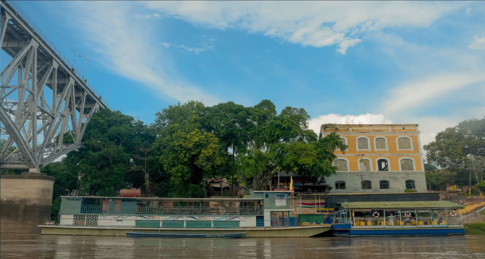
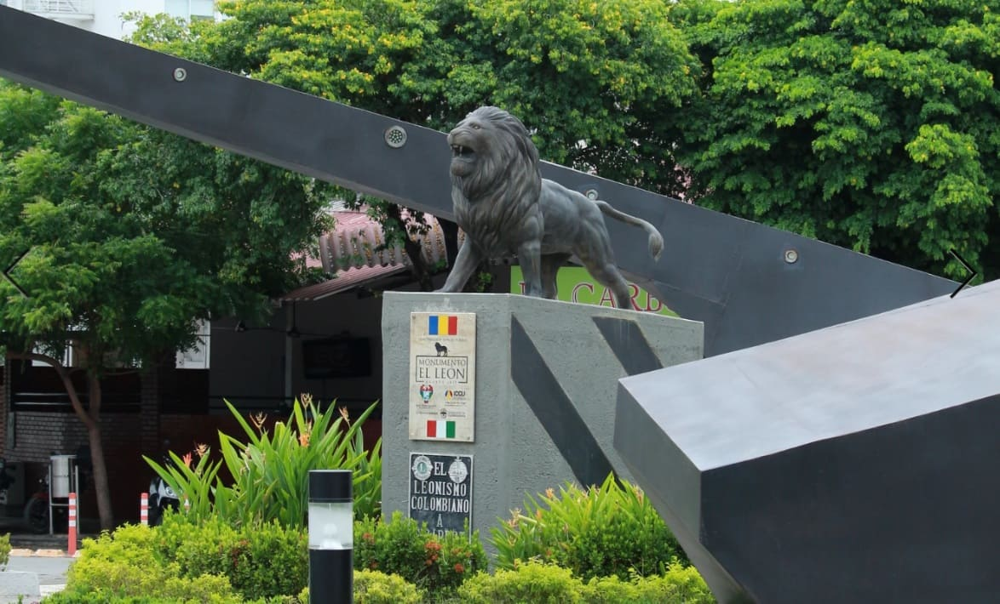
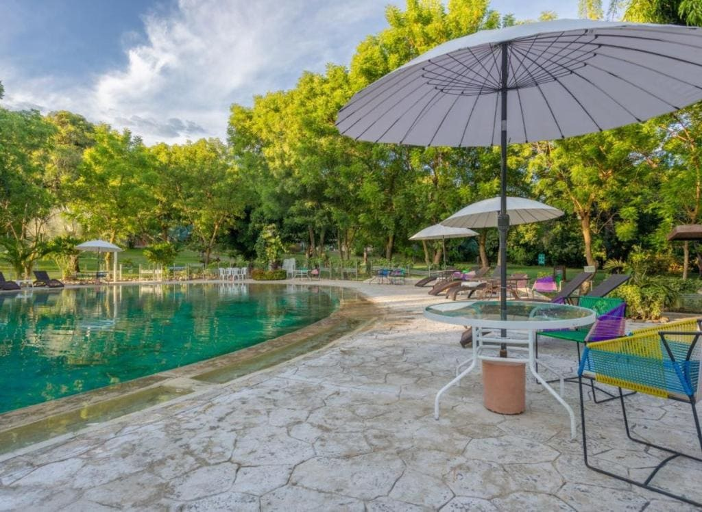

UN DESTINO CON BELLEZA NATURAL E HISTORIA
Girardot, fundada oficialmente en el siglo XIX como punto comercial estratégico, se transformó con el tiempo en uno de los destinos favoritos del centro del país. Su clima cálido, con temperaturas agradables durante todo el año, la convierte en un lugar ideal para el descanso. Además de su oferta hotelera y recreativa, la ciudad mantiene una fuerte relación con el río Magdalena, eje histórico del transporte y del crecimiento económico regional, que hoy sigue siendo símbolo de identidad y atractivo para quienes la visitan.
Clima cálido todo el año
Sol, piscina y actividades al aire libre en cualquier temporada.
Destino cercano a Bogotá
Escapada ideal para fines de semana y planes de descanso.
.
MONUMENTOS

HOTELES Y HOSPEDAJE
